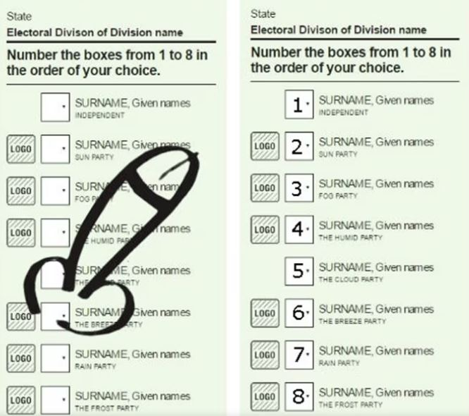

I find it hard to understand how passionate some folks are about voting Yes or voting No. Not because I do not understand passion, but because the cases for either position are so unconvincing.

I am not “barracking” for either side. If the result is Yes I will find it hard to watch the self-satisfied ABC pundits or Albo taking a bow of glory. If the result is No, I will not want to watch Dutton’s fork-tongued opportunism and I will really hate to see the disappointment of our indigenous peoples.
Guess who won’t be tuning in to the watch the count.
When I look at the various arguments for Yes or No they are mainly weak. The few stronger arguments seem to counterbalance each other. Crucially, I actively dislike both outcomes almost equally.
So let’s look at the various arguments, not exhaustively, but the main ones, which I think lead a reasonable person to consider voting informal.
The functional argument for voting Yes is that direct representation will result in better policy and implementation. This is asserted by supporters quite strongly. I have no idea of this is true and neither does anyone else. I would not be surprised if a Voice ends up being full of sound and fury signifying nothing but disunity and having little tangible effect. But I don’t know either.
The main functional argument for voting No is based on risk. Rather than improving the workings of government a Voice may lead to continual legal challenges as well as conflicting messages and views from a likely disunited Voice. Is this inevitable though and so what anyway? This is just politics as usual. And the government of the day can adjust the parameters of the Voice to improve its function.
I consider the functional arguments weak on both sides. The Voice could be good and it could be bad, but probably not very good or very bad and nobody knows which. So this is my first possible road to an informal vote.
The national unity argument for voting Yes is that it will make us less divided because goodwill towards indigenes will be formalised and agreed by the nation. The national unity argument for voting No is that other ethnic groups like migrants and poor white farmers will feel excluded and betrayed because one group is given special privilege. For sure, we will not be more unified after the referendum. And since the final vote is likely to be close, there will be a lot of disappointed people on October 15, regardless of the outcome.
If we are after national unity, then there is no path to it from this referendum and it would be better not to have a vote at all. Which motivates an informal vote on the basis that “I will not be part of this whole divisive exercise.”
The moral argument for voting Yes is to correct the lack of acknowledgment in the original constitution, and implicitly acknowledge past wrongs by empowering those dispossessed. There would be few Australians who would be unmoved by the symbolic goodness of a Yes vote. The moral argument for voting No is that we should not embed ethnically based rights into the constitution. All sorts of bizarre considerations natural arise and so far are not addressed. Who qualifies to vote as an aborigine?
I consider both of these moral arguments strong though I realise that there are arguments against both of them. But I take the view that the Voice is morally good in one way and morally bad in another. Which is a problem for me because these considerations largely counterbalance each other.
Is there any way that we could have avoided this insoluble moral conundrum?
Yes, there really is.
We could legislate the Voice and add non-functional acknowledgment into the constitutional preamble. Further constitutional change in the future would still be on the table (but unlikely). This is actually the only solution that resolves these two solid moral arguments. And yes, I realise that this is Peter Dutton’s latest policy but I have been saying it for six months, and others well before me.
Which leads me to a different, but what I think is the strongest, avenue to voting informal.
We never asked for this referendum which offers no attractive outcome, to me at least. I deeply resent this forced choice and I resent the Prime Minister for forcing it on me. I want a political price to be paid. This sounds like an argument for voting No, to punish the Prime Minister and to make it clear to future leaders that forcing a contrived and unnecessary referendum on the Australian people will be appropriately punished.
But the problem is that the resulting win for No will not be interpreted this way, as a targeted repudiation of political chicanery. It will be interpreted as a vote against reconciliation. Many indigenes will interpret it this way and will be encouraged to do so. The usual suspects in the media will decry the result rather than analyse the different reasons people may have voted No.
So, for this reason, I do not want to vote No.
The only way then for me to register a vote which properly reflects my views and does not send a message against reconciliation is to leave both boxes blank and write “No Choice” on the ballot.
Can an informal vote achieve anything?
Well, in the past it has.
In 1981, the Tasmanian government had a referendum where voters were offered a choice to build a dam on the Gordon, either above the Olga or below the Franklin. What a choice! Fully 45% wrote “No dams” on the ballot when offered this unacceptable binary. This historically high informal vote result was a good reflection of the popular will and was the only way that this democratic preference could be expressed. The key issue was that the option of “No dams” was not on the ballot. So they created their own third option.
We are in a similar situation now, though not identical since a “No Voice” option is available, unlike in Tasmania. What is identical is that the ballot does not offer what many, perhaps most, Australians would consider the best option i.e. a legislated Voice followed by constitutional acknowledgment. Instead, they are being forced to choose between two options neither of which they want.
It is probably too late to establish a “No choice” campaign and achieve a massive informal vote. So the success of the “No dams” campaign will not be repeated. There is no public discussion of the possibility and the Age and Australian did not even respond to my pitch for a short version of this opinion piece. I guess they are both too invested in one side.
However, I think even the mention of voting informal might turn on a light in people’s minds. They might realise that they do have a third option, albeit not the best one. The available third option is to write “No choice”. I mention it now in the hope that the idea might spread and build. Please share it on FB and X and Instagram. It will help our nation.
If the informal vote is larger than usual this would be an important message to power. How large?
In the last referendum on the republic in 1999, the informal vote was 5.2%. I hope this time it will be higher. And if the result of the referendum is No, a high informal vote will provide another interpretation of the outcome than we are a nation that rejects reconciliation.
Indeed, assuming like me that you have no strong feelings either way, if the polls indicate a clear No result just before the referendum, the only ethical vote is “No Choice”. Because a high informal vote is the only way to soften the message of that outcome.
Moreover, it should lead to an analysis of how ill-conceived this referendum was from the beginning and how both sides of politics are solely focussed on partisan advantage regardless of the damage they do to the nation.
And then we can start talking to each other again, in good faith, without the media and pollies waiting to judge us for their own advantage.
Fair enough. But it seems like a copout to me. It seems to me that you've been served your shit sandwich, and now you have to decide what, of the actions available to you will do least harm. So with a similar degree of scepticism to you, I'll be voting "Yes".
agree with Nick. Also an informal vote is a vote for no anyway
I think of this as a decision making under uncertainty problem. I am 51% sure that Yes is better but there is even uncertainty in my 51%. I really have no idea. Yet I have to vote Yes=1 or Yes=0. Doesn’t sit well with me. I would rather give 50% to each, which is roughly the effect of informal. The weakness with this argument is that it would apply to many other elections – but maybe that is not such a weakness? Has anyone ever made the argument that, with our compulsory voting system, if you don't feel strongly then you should get out of the way of those who do? But then there is the important meta-issue of whether you agree with the referendum at all and expressing this view with a vote. So, I would say that for anyone who is not quite strongly drawn to vote for one or the other and who also thinks this referendum has been damaging and unnecessary, the only logical expression of their view is to vote informally. Definitely not a cop out.
Not true. It is hardly distinguishable from voting 50% yes and 50% no. To pass, the referendum required more than 50% of FORMAL votes.
err Chris you have not voted yes so you have in fact assisted the no vote
err Trampis, I have not voted No so I have in fact assisted the Yes vote
err I am using your specious example. It is not thought out at all as you have shown. thanks
The informal vote was about 1%. At least 60% voted "no". People knew what they were doing and voted against rep[resentation based on race and genealogy. No ambiguities here.
If people were offered the option of voting informally they might have taken it. I was unable to get the Age or Australian to even reply to my pitch and two attempts at brief letters did not appear. Interesting that the informal vote is lower than usual.
Harry, I just noted that the total percentage of people who voted informal OR DID NOT VOTE is 22.5%, compared to 5.5% at the last referendum. The last time we got a figure like this was about 32 referenda ago. For the last 20, the % was in single figures. I am not sure of this was due to people resenting the imposition of the referendum as I have argued, but I will indulge in self-motivated reasoning and argue this!
According to Anthony Green total votes were 85% of registered voters - at recent federal elections about 90% of registered voters cast a ballot.
Far be it for me challenge Anthony Green, but I disagree with the 85% (I think it is 77.5%) and cannot see the relevance of comparing referenda with elections anyway. I collected the data on referenda at the link below: the sources are in the second sheet. https://www.dropbox.com/scl/fi/017t9qzdktqwkdgfq0j5o/referenda-counts.xlsx?rlkey=nlytccbx7izxah7lj71wfra9v&dl=0
Gather that counting is not yet quite complete. PS A AFR poll just published indicates a likely reason for some not bothering : "The latest True Issues survey reveals that while eight in 10 voters wanted the government focussed on the cost of living, just one in 10 felt the same about the Voice."